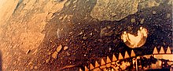
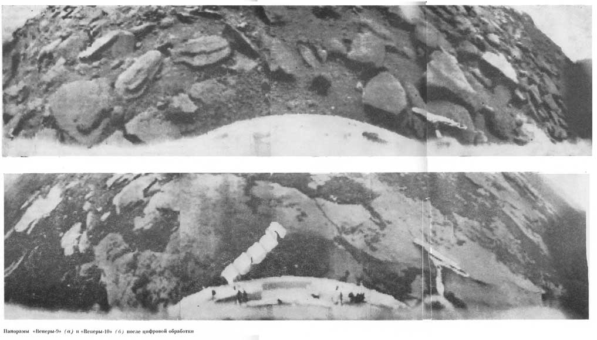
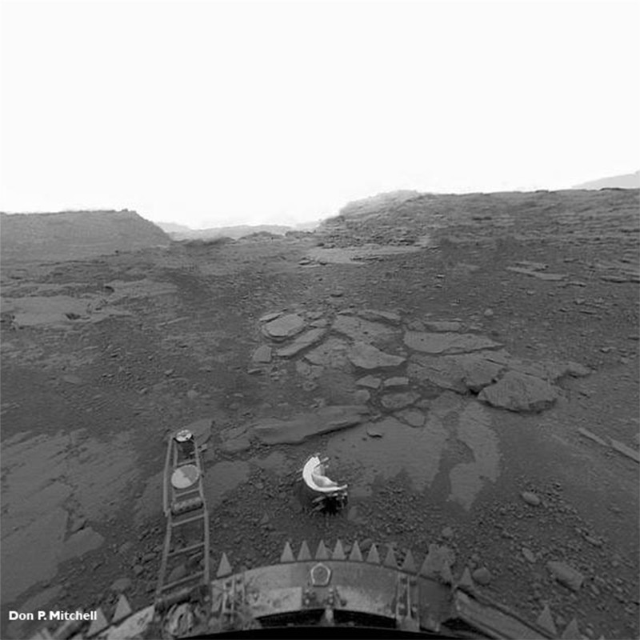

Архив космических миссий
«Венера» — серия советских автоматических межпланетных станций (АМС) для изучения Венеры и космического пространства. По мере получения новых данных о Венере в конструкцию аппаратов вносились изменения с целью приспособить их к экстремальным условиям планеты. До начала космических исследований основной моделью Венеры была землеподобная планета с океанами жидкой воды, сокрытыми за плотной атмосферой, поэтому первые версии аппаратов обладали запасом плавучести, позволявшим им не утонуть в предполагаемом венерианском океане, а последние были способны сохранять работоспособность при температуре свыше 700 К и давлении свыше 90 атмосфер. В своём последнем полёте этот аппарат выдержал 740 К, впоследствии он перестал передавать информацию и сгорел.
«Венера-1» стала первым космическим аппаратом, оказавшимся в сфере действия тяготения Венеры. Впервые проведён успешный запуск на межпланетную траекторию. Во время полёта в межпланетном пространстве было подтверждено наличие солнечного ветра. Были учтены просчёты проектирования, выявленные в ходе обоих запусков: впредь приёмопередающая система не отключалась ни при каких обстоятельствах. Ещё одним выводом стала необходимость постройки наземного испытательного макета, на котором можно было бы отрабатывать нештатные ситуации, возникающие с АМС в течение полёта.
«Венера-4» в октябре 1967 года доставила на Венеру сферический спускаемый аппарат, который в течение 94 минут с помощью парашютной системы опускался на ночной стороне планеты. Была получена информация о том, что на высоте 25 км температура атмосферы Венеры составляет 271 °C, а давление — 17—20 атмосфер. Было установлено, что атмосфера Венеры на 90 % состоит из углекислого газа. Была обнаружена водородная корона Венеры. Если до полёта «Венеры-4» считалось, что давление на поверхности Венеры составляет 10 атмосфер, то обработка данных «Венеры-4» позволила получить новую, на порядок большую оценку — около 100 атмосфер, что было учтено при проектировании следующих аппаратов серии. Запуск 17 июня 1967 г. аналогичной АМС 3МВ-4 «Венера-67A» («Космос-167») для спуска на Венеру не удался.
«Венера-5» и «Венера-6» в мае 1969 года вошли в ночную атмосферу Венеры и передали уточнённые данные о более глубоких слоях атмосферы. Во время перелёта были получены новые данные о структуре потоков плазмы (солнечного ветра) вблизи Венеры.
«Венера-7»запущена 17 августа 1970 года, 15 декабря 1970 года достигла Венеры. Её спускаемый аппарат был полностью переделан по сравнению с предыдущими станциями («Венера-4, 5, 6»), и был рассчитан на давление, на порядок большее — 180 атмосфер, что позволило впервые в мире совершить мягкую посадку на поверхность Венеры работоспособного аппарата (предыдущие станции были разрушены атмосферным давлением на высотах от 18 до 28 км). Информация передавалась 53 минуты, в том числе 20 минут — с поверхности (первый случай радиосвязи с поверхности другой планеты). Из-за выхода из строя коммутатора, из всех установленных приборов были получены только данные термометра. Тем не менее, по интегрированию доплеровского сдвига сигнала удалось привязать данные о температуре к высоте. По полученным данным был выявлен адиабатический характер изменения температуры, что по данным измерений предыдущих станций позволило рассчитать распределение давления и плотности атмосферы Венеры по высоте вплоть до поверхности: у поверхности давление атмосферы Венеры составило 90 ± 15 атмосфер, а температура — 475 ± 20 °C. Запуск 22 августа 1970 г. аналогичной АМС 3МВ-4 «Венера-70A» («Космос-359») для посадки на Венеру не удался.
«Венера-8» запущена 27 марта 1972 года, и 22 июля 1972 года, через 117 суток после старта достигла Венеры, впервые осуществив мягкую посадку на её дневной стороне. Спускаемый аппарат был вновь переделан — снижение расчётного рабочего давления до 105 атмосфер (вместо 180 на «Венере-7») позволило облегчить его почти на 40 кг, что позволило разместить на станции дополнительные приборы — фотометр и прибор для измерения концентрации аммиака. Одной из целей было измерение освещённости, необходимое для последующего фотографирования поверхности. Впервые была измерена освещённость на поверхности планеты (она оказалась такой же, как на Земле в пасмурный день), была измерена концентрация аммиака на высотах 33 и 46 км, с помощью гамма-спектрометра было впервые проведено исследование грунта другой планеты. По доплеровскому смещению сигнала во время спуска была измерена скорость ветра на разных высотах. Программа полёта станции «Венера-8» была выполнена полностью. Запуск 31 марта 1972 г. аналогичной АМС 3МВ-4 «Венера-72A» («Космос-482») для посадки на Венеру не удался.
«Венера-9» и «Венера-10» — тяжёлые АМС нового третьего поколения, разработанные, как и все последующие, в НПО им. Лавочкина. Спускаемые аппараты станций «Венера-9» и «Венера-10» в октябре 1975 года совершили посадку на дневной стороне планеты на расстоянии около 2000 км друг от друга. Спустя две минуты после посадки начиналась передача телевизионной панорамы. Это были первые в мире фотографии, переданные с поверхности другой планеты. Была измерена плотность грунта и содержание естественных радиоактивных элементов. Передача информации со спускаемого аппарата длилась 53 минуты. Сами станции продолжали полёт, выйдя на двухсуточные сильно вытянутые эллиптические орбиты Венеры, и стали таким образом первыми в мире искусственными спутниками Венеры.
«Венера-11» и «Венера-12» в декабре 1978 года совершили посадку на дневную сторону Венеры. В комплексе измерений параметров атмосферы планеты велась регистрация электрических разрядов. Передача изображений с поверхности не удалась.
«Венера-13» и «Венера-14» — спускаемые аппараты станций в марте 1982 года совершили мягкую посадку на поверхность планеты. Впервые были получены цветные изображения поверхности и проведён прямой анализ грунта планеты. Также СА имели микрофоны, производилась передача звука с поверхности
«Венера-15» и «Венера-16»в октябре 1983 года стали искусственными спутниками Венеры. В течение нескольких месяцев передавали на Землю радиолокационные изображения поверхности Венеры с разрешением в 1—2 км.
Дальнейшим продолжением программы «Венера» в СССР стала программа «Вега» по исследованию Венеры (посадочными аппаратами и аэростатами в атмосфере), а также кометы Галлея. АМС «Вега-1» и «Вега-2» запущены в июне 1985 г.


